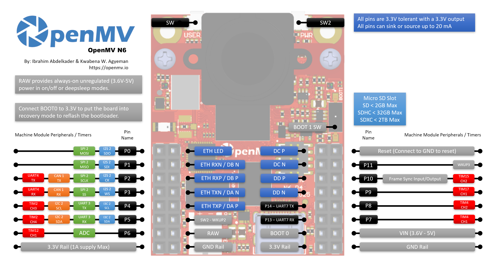

OpenMV N6¶
Die OpenMV N6 basiert auf dem STMicroelectronics STM32N657 (Cortex‑M55 @ 800 MHz) mit einer 1‑GHz‑On‑Chip‑NPU mit 600 GOPS INT8. Das Board kombiniert die NPU mit dem PAG7936 1‑MP‑Global‑Shutter‑Sensor auf einem abnehmbaren Träger, Gigabit‑Ethernet, USB‑C High‑Speed, Wi‑Fi und Bluetooth 5.1 und führt YOLOv8/YOLOv11‑Inferenz mit 30 FPS parallel zum Live‑Video‑Streaming aus.

Vollständiges Datenblatt, Fotos und Abmessungen finden Sie auf der OpenMV N6 Produktseite.
Höhepunkte¶
STM32N657 Cortex‑M55 mit 800 MHz (1280 DMIPS) und ARM Helium 128‑Bit SIMD — 6,4 Gigaops Vektor-Durchsatz.
1‑GHz‑NPU, 600 GOPS INT8 — führt YOLOv8/YOLOv11‑Erkennung mit 30 FPS aus.
ISP für bis zu 5 MP RAW Bayer, 2D‑GPU für Skalierung und 3D‑Rotation, H.264‑Encode bis 1080p und Hardware‑JPEG‑Codec.
64 MB externes SDRAM (16‑Bit @ 200 MHz DDR, 800 MB/s) plus 4,2 MB internes SRAM und 32 MB Octal‑Flash (200 MHz DDR, 400 MB/s).
PAG7936 1‑MP‑Farb‑Global‑Shutter‑Sensor.
Integrierte IMU (Beschleunigungsmesser + Gyroskop) und Mikrofon für Audio‑ + Bewegungsfusion.
High‑Speed USB‑C (480 Mb/s, 1,5 A Strombegrenzung), Gigabit‑Ethernet (PoE‑fähig über Shield), Wi‑Fi a/b/g/n + Bluetooth 5.1 (Chip‑Antenne oder U.FL‑Option).
microSD‑Sockel — SD bis 2 GB, SDHC bis 32 GB, SDXC bis 2 TB.
LiPo‑Ladegerät (500 mA Schnellladung), Batteriespannungs‑ADC, RTC mit 8 KB Backup‑RAM und ein dediziertes Backup‑Batterie‑Pin.
18 I/O‑Pins, alle 3,3 V Ausgang / 3,3 V tolerant, 20 mA pro Pin, interrupt-fähig.
Benutzer‑RGB‑LED, Benutzertaste und eine separate Status‑LED für Laden / USB / VIN‑Stromversorgung.
Warnung
Die I/O‑Pins der N6 sind nicht 5‑V‑tolerant. Schließen Sie das Gerät nicht direkt an einen 5‑V‑MCU wie den Arduino Mega an. Versorgen Sie die N6 ausschließlich über VIN.
Pinbelegung¶
{kind=link}

Pin-Referenz¶
Pin-Name |
Funktion |
|---|---|
P0 |
SPI2 MOSI / I2S2 SDO |
P1 |
SPI2 MISO / I2S2 SDI |
P2 |
SPI2 SCLK / UART4 TX / CAN1 TX / I2S2 CK |
P3 |
SPI2 SS / UART4 RX / CAN1 RX / I2S2 WS |
P4 |
I2C2 SCL / UART3 TX / TIM2 CH3 / I3C2 SCL |
P5 |
I2C2 SDA / UART3 RX / TIM2 CH4 / I3C2 SDA |
P6 |
TIM12 CH1 (kein ADC auf diesem Pin — siehe |
P6_ADC |
dedizierter 12‑Bit‑ADC‑Eingang (intern mit P6 verbunden) |
P7 |
TIM4 CH1 |
P8 |
TIM4 CH2 |
P9 |
TIM17 CH1 |
P10 |
TIM15 CH2 / Frame‑Sync‑I/O |
P11 |
Wakeup (active low, WKUP3) |
P12 |
RESET — zum Zurücksetzen des Boards auf GND ziehen (kein GPIO) |
P13 |
UART7 RX |
P14 |
UART7 TX |
P15 |
SPI4 CS |
P16 |
SPI4 SCK |
P17 |
SPI4 MISO |
P18 |
SPI4 MOSI |
SW |
Benutzertaste (active low) |
ONOFF (SW2) |
Deep‑Sleep‑Wakeup‑Taste (active low, WKUP2) |
ST |
low bei VIN‑Stromversorgung, high bei USB‑Stromversorgung |
CHG |
active low; low während eine angeschlossene LiPo‑Batterie geladen wird |
PG |
active low; low wenn VIN‑ oder USB‑Stromversorgung anliegt |
BAT_ADC |
interner ADC‑Kanal zur Messung der Spannung der angeschlossenen LiPo‑Batterie |
LED_RED |
RGB‑LED roter Kanal (active low) |
LED_GREEN |
RGB‑LED grüner Kanal (active low) |
LED_BLUE |
RGB‑LED blauer Kanal (active low) |
Bemerkung
Die P10 Frame‑Sync‑Leitung ist ein gemeinsam genutzter Bus. Sie ist gleichzeitig mit dem MCU, dem Trigger‑/Belichtungs‑Pin des Kamerasensors und dem Benutzer‑Header verdrahtet. Die Richtung ist anwendungsabhängig — der MCU, der Sensor oder ein externes Signal kann sie ansteuern, je nachdem wie der Sensor konfiguriert ist (einige Sensoren können denselben Pin als Trigger‑Eingang oder als Belichtungsausgang verwenden). Stellen Sie sicher, dass jeweils nur ein Treiber aktiv ist.
Bemerkung
ONOFF und P11 beziehen sich auf die immer aktive RAW‑Schiene (nicht auf die geschaltete 3,3‑V‑Schiene), sodass sie funktionsfähig bleiben, während der Rest des Boards im Deep‑Sleep‑/Niedrigenergiemodus ist. Beide Eingänge sind active low.
Diese Pins laufen über Pegelwandler, damit sie auf der RAW‑Schiene betrieben werden können. Wenn Sie für ONOFF oder P11 unbedingt direktes 3,3‑V‑GPIO‑Verhalten benötigen (zum Beispiel um sie von einem 3,3‑V‑MCU anzusteuern, ohne über den Wandler zu gehen), stellt das Board Pull‑up‑ und 0‑Ohm‑Jumper‑Pads bereit, mit denen sich der Wandler umgehen lässt. Dies ist eine fortgeschrittene Hardware‑Modifikation — die meisten Benutzer sollten sie unangetastet lassen.
Bemerkung
P15–P18 werden mit dem Gigabit‑Ethernet‑PHY geteilt, der standardmäßig verdrahtet und aktiv ist. Um diese Pins als Benutzer‑I/O zu verwenden, müssen Sie den 0‑Ohm‑Widerstand auf der Rückseite des Boards in die GPIO‑Position umlöten. Dadurch wird nur Gigabit‑Ethernet deaktiviert — 10/100‑Mb/s‑Ethernet funktioniert weiterhin über seine dedizierten Pins.
Stromversorgungs-Pins¶
3.3V — geregelte 3,3‑V‑Schiene. Auf der N6 nur Ausgang — speisen Sie keine externe Stromversorgung in diesen Pin ein. Bis zu 1 A für Shields verfügbar.
VIN — 5‑V‑Eingang. Versorgt das Board und das integrierte LiPo‑Ladegerät.
RAW — Ein-/Ausgang, immer aktiv (3,6 V – 5 V). Führt die jeweils aktive Quelle (VIN, USB oder angeschlossene Batterie) und kann auch als Eingang verwendet werden. Sie müssen RAW über eine Reihendiode ansteuern, wenn Sie Strom in den Pin einspeisen — andernfalls fließt Strom zurück in VIN/USB und beschädigt die Versorgung oder den integrierten Schutz.
GND — gemeinsame Masse.
Bemerkung
Der integrierte Power‑Management‑Chip wählt automatisch diejenige Quelle, bei der USB oder VIN die höhere Spannung hat, um das Board und das Batterieladegerät zu versorgen. Wenn eine LiPo angeschlossen ist, wird sie mit dem verbleibenden Spielraum geladen, und der Controller greift auf die Batterie zurück, um das Board am Laufen zu halten, falls VIN/USB einbrechen oder abgezogen werden.
Bemerkung
Auf der Rückseite des Boards befinden sich Lötpads für eine externe 3,3‑V‑RTC‑Backup‑Batterie. Das Anlöten einer Knopfzelle an diese Pads hält die RTC und 8 KB Backup‑RAM in Betrieb, während der Rest des Boards stromlos ist.
Tipp
Verwenden Sie den Akkulaufzeit-Schätzer, um zu modellieren, wie lange die N6 für ein gegebenes Aktiv-/Deep‑Sleep‑Tastverhältnis mit einer Batterie läuft.
Ethernet-Pins¶
Die N6 stellt die MDI‑Paare des Ethernet‑PHY auf dedizierten Pads neben dem GPIO‑Header bereit. Die MDI‑Pins können nicht sicher direkt an einen RJ45 verdrahtet werden — Ethernet‑Magnetics (ein Isolationstransformator, entweder in einer Magjack integriert oder auf dem Shield) sind zwischen dem PHY und dem Kabel erforderlich. Das OpenMV PoE Shield enthält sie; wenn Sie Ihre eigene Buchse bauen, verwenden Sie einen RJ45 mit integrierten Magnetics oder einen externen Transformator.
ETH_LED — Link‑/Aktivitäts‑LED. Active low, wenn ein Link besteht; blinkt bei Datenverkehr.
DA P / DA N — Paar A (TX bei 10/100, von allen Geschwindigkeiten genutzt).
DB P / DB N — Paar B (RX bei 10/100, von allen Geschwindigkeiten genutzt).
DC P / DC N — Paar C, nur bei Gigabit genutzt.
DD P / DD N — Paar D, nur bei Gigabit genutzt.
10/100 Mb/s benötigt nur die Paare A und B. Gigabit benötigt alle vier Paare A–D.
Recovery- und Debug-Pins¶
RESET — zum Zurücksetzen des Boards auf GND ziehen. Beim Loslassen startet der MCU normal hoch.
BOOT0 — beim Einschalten des Boards auf 3,3 V ziehen, um in den ROM‑Bootloader‑Modus zu gelangen. OpenMV IDE verwendet diesen Modus, um den integrierten Bootloader neu zu flashen.
BOOT1 — Schalter, der das Board für die Verwendung mit STs Tooling (ein an den ARM 10‑Pin SWD/JTAG‑Header angeschlossenes ST‑LINK) in den Entwicklermodus versetzt. Lassen Sie ihn für den normalen Betrieb mit OpenMV‑Firmware und ‑Tools deaktiviert.
Ein dedizierter ARM 10‑Pin SWD/JTAG‑Header ist vorhanden, kompatibel mit ST‑LINK‑ und SEGGER J‑Link‑Adaptern.
Integrierte Peripheriegeräte¶
LEDs¶
Die N6 hat zwei RGB‑LEDs:
Benutzer‑RGB‑LED — softwaresteuerbar, bereitgestellt als
LED_RED,LED_GREENundLED_BLUE:from machine import LED LED("LED_RED").on() LED("LED_GREEN").on() LED("LED_BLUE").on()
Power‑LED — direkt von der integrierten Power‑Management‑Hardware angesteuert, keine Softwaresteuerung. Verwenden Sie sie, um auf einen Blick zu erkennen, was die Versorgung tut.
Während des Betriebs:
Kanal
Bedeutung
Blau
VIN versorgt das Board (aus bei USB)
Grün
USB‑ oder VIN‑Stromversorgung vorhanden
Rot
lädt eine angeschlossene LiPo‑Batterie
Im Deep‑Sleep sind alle Kanäle aus außer Rot, das weiterhin leuchtet, während eine LiPo geladen wird.
Power-Status-Pins¶
Drei active‑low‑Status‑Eingänge lassen die Firmware erkennen, was der integrierte Power‑Management‑Chip tut:
ST — low, wenn das Board über VIN läuft, high, wenn es über USB‑Stromversorgung läuft.
CHG — low, während eine angeschlossene LiPo‑Batterie geladen wird.
PG — low, wenn VIN‑ oder USB‑Stromversorgung vorhanden ist.
from machine import Pin
on_vin = not Pin("ST", Pin.IN).value()
charging = not Pin("CHG", Pin.IN).value()
power_ok = not Pin("PG", Pin.IN).value()
Kamerasensor¶
Der PAG7936 wird über das Modul csi — Kamerasensoren angesteuert:
import csi
cam = csi.CSI()
cam.reset()
cam.pixformat(csi.RGB565)
cam.framesize(csi.HD) # 1280×800
cam.snapshot(time=2000) # let auto‑exposure settle
while True:
img = cam.snapshot()
Der Sensor sitzt auf einem abnehmbaren Modul — tauschen Sie ihn gegen eines der anderen OpenMV‑Kameramodule (Global Shutter, Thermal, höhere Auflösung usw.) aus, ohne den Rest des Boards zu ändern.
Der PAG7936 unterstützt den getriggerten Modus — die Pixel‑Integration richtet sich exakt nach jedem csi.CSI.snapshot‑Aufruf statt nach dem frei laufenden Frame‑Takt, was nützlich ist, um die Aufnahme mit einem externen Ereignis oder einem anderen Sensor zu synchronisieren. Aktivieren Sie ihn über csi.CSI.ioctl mit csi.IOCTL_SET_TRIGGERED_MODE. Die Bildrate sinkt auf etwa die Hälfte des frei laufenden Modus, da das Auslesen nicht mehr mit der Integration des nächsten Einzelbilds in einer Pipeline verarbeitet wird:
cam.ioctl(csi.IOCTL_SET_TRIGGERED_MODE, True)
NPU¶
Die 1‑GHz‑Neural‑ART‑NPU der N6 (600 GOPS INT8) wird über das Modul ml — Maschinelles Lernen bereitgestellt. Modelle, die im schreibgeschützten /rom‑Dateisystem gespeichert sind, werden direkt aus dem Flash geladen, ohne ins RAM kopiert zu werden, sodass selbst große Detektoren bequem neben dem Live‑Framebuffer Platz finden. Führen Sie einen YOLOv8‑Detektor auf jedem Einzelbild aus und zeichnen Sie die Vorhersagen über das Live‑Bild:
import csi
import time
import ml
from ml.postprocessing.ultralytics import YoloV8
# Initialize the sensor.
csi0 = csi.CSI()
csi0.reset()
csi0.pixformat(csi.RGB565)
csi0.framesize(csi.VGA)
# Load YOLO V8 model from ROM FS.
model = ml.Model("/rom/yolov8n_192.tflite", postprocess=YoloV8(threshold=0.4))
print(model)
# Visualization parameters.
n = len(model.labels)
model_class_colors = [
(int(255 * i // n), int(255 * (n - i - 1) // n), 255)
for i in range(n)
]
clock = time.clock()
while True:
clock.tick()
img = csi0.snapshot()
# boxes is a list of list per class of ((x, y, w, h), score) tuples
boxes = model.predict([img])
# Draw bounding boxes around the detected objects
for i, class_detections in enumerate(boxes):
rects = [r for r, score in class_detections]
labels = [model.labels[i] for j in range(len(rects))]
colors = [model_class_colors[i] for j in range(len(rects))]
ml.utils.draw_predictions(img, rects, labels, colors, format=None)
print(clock.fps(), "fps")
Mikrofon¶
Das integrierte Mikrofon wird über audio — Audio-Modul erfasst. Jeder Puffer kommt als vorzeichenbehaftetes 16‑Bit‑PCM‑bytearray an, was es trivial macht, ihn an ulab/numpy für schnelles DSP zu übergeben. Ein einfacher Lautstärkedetektor — gibt aus, wann immer die RMS‑Lautstärke einen Schwellenwert überschreitet:
import audio
from ulab import numpy as np
def loudness(pcmbuf):
samples = np.array(np.frombuffer(pcmbuf, dtype=np.int16), dtype=np.float)
rms = np.sqrt(np.mean(samples ** 2))
if rms > 10000:
print("Loud!", int(rms))
audio.init(channels=1, frequency=16000, gain_db=24)
audio.start_streaming(loudness)
while True:
pass
IMU¶
Der integrierte Beschleunigungsmesser + Gyroskop unter dem Kameramodul wird über imu — IMU-Sensor bereitgestellt:
import imu
import time
while True:
print(imu.acceleration_mg()) # (x, y, z) in milli‑g
print(imu.angular_rate_mdps()) # (x, y, z) in milli‑deg/s
time.sleep_ms(100)
Wi‑Fi¶
Der integrierte CYW43439 wird über network — Netzwerkkonfiguration als Station‑Schnittstelle bereitgestellt. Nach dem Verbinden gibt ipconfig("addr4") das (ip, netmask)‑Paar zurück:
import network, time
wlan = network.WLAN(network.STA_IF)
wlan.active(True)
wlan.connect("ssid", "password")
while not wlan.isconnected():
time.sleep(1)
print("Wi‑Fi IP:", wlan.ipconfig("addr4")[0])
Bluetooth¶
Derselbe CYW43439 stellt auch Bluetooth 5.1 bereit. Verwenden Sie aioble — Async BLE für asyncio‑freundliches BLE — bewerben Sie sich beispielsweise als Peripheriegerät und warten Sie, bis sich ein Central verbindet:
import asyncio
import aioble
async def run():
while True:
conn = await aioble.advertise(250_000, name="OpenMV-N6")
print("Connected:", conn.device)
await conn.disconnected()
asyncio.run(run())
Ethernet¶
Wenn ein RJ45 (mit Magnetics) an die MDI‑Pads angeschlossen ist, erscheint der Gigabit‑PHY als LAN‑Schnittstelle. DHCP läuft automatisch, sobald der Link aufgebaut ist:
import network, time
lan = network.LAN()
lan.active(True)
while not lan.isconnected():
time.sleep(1)
print("Ethernet IP:", lan.ipconfig("addr4")[0])
microSD-Karte¶
Wenn eine Karte eingelegt wird, wird sie automatisch unter /sdcard eingehängt und ist über das reguläre Dateisystem nutzbar:
import os
for entry in os.listdir("/sdcard"):
print(entry)
Bus-Referenz¶
GPIO¶
Verwenden Sie machine.Pin, um beliebige der mit Siebdruck beschrifteten Pins zu lesen oder anzusteuern. Ausgänge sind 3,3‑V‑CMOS und können bis zu 20 mA pro Pin aufnehmen/liefern.
from machine import Pin
out = Pin("P0", Pin.OUT)
out.on()
out.off()
out.value(1)
inp = Pin("P1", Pin.IN, Pin.PULL_UP)
print(inp.value())
Jeder Eingangs‑Pin kann auch einen Interrupt bei Flankenwechseln auslösen:
def handler(pin):
print("triggered:", pin)
Pin("P1", Pin.IN, Pin.PULL_UP).irq(
handler, Pin.IRQ_FALLING | Pin.IRQ_RISING,
)
UART¶
Bus |
TX |
RX |
|---|---|---|
UART3 |
P4 |
P5 |
UART4 |
P2 |
P3 |
UART7 |
P14 |
P13 |
from machine import UART
uart = UART(3, baudrate=115200)
uart.write("hello")
uart.read(5)
I²C¶
Bus |
SCL |
SDA |
|---|---|---|
I2C2 |
P4 |
P5 |
from machine import I2C
i2c = I2C(2, freq=400_000)
i2c.scan()
i2c.writeto(0x76, b"hi")
Dieselbe Hardware kann über machine.I2CTarget auch im Target‑(Slave‑)Modus verwendet werden, um einem anderen I²C‑Controller einen Speicherbereich bereitzustellen:
from machine import I2CTarget
buf = bytearray(32)
target = I2CTarget(2, addr=0x42, mem=buf)
SPI¶
Bus |
MOSI |
MISO |
SCK |
CS |
|---|---|---|---|---|
SPI2 |
P0 |
P1 |
P2 |
P3 |
SPI4 |
P18 |
P17 |
P16 |
P15 |
from machine import SPI
from machine import Pin
spi = SPI(2, baudrate=10_000_000)
cs = Pin("P3", Pin.OUT, value=1) # CS is not driven by the SPI peripheral
cs.value(0)
spi.write(b"hello")
cs.value(1)
CAN¶
Bus |
TX |
RX |
|---|---|---|
CAN1 |
P2 |
P3 |
Bemerkung
CAN wird auf diesem Board in Firmware v5.0.0 noch nicht unterstützt.
from machine import CAN
can = CAN(1, 500_000)
can.set_filters(None)
can.send(0x123, b"\xDE\xAD\xBE\xEF")
print(can.recv())
ADC¶
Beide ADC‑Kanäle laufen über einen operationsverstärkergepufferten Spannungsteiler, bevor sie den MCU erreichen, sodass read_u16() auf jedem Pin auf eine andere Vollausschlags‑Eingangsspannung abgebildet wird.
Pin |
Vollausschlag |
Hinweise |
|---|---|---|
P6_ADC |
~3,3 V |
universelles Pad, intern mit P6 verbunden |
BAT_ADC |
~5,0 V |
interner Kanal für die LiPo‑Batterie |
from machine import ADC
import time
adc = ADC("P6_ADC")
bat = ADC("BAT_ADC")
while True:
print("P6:", adc.read_u16() * 3.3 / 65535, "V")
print("BAT:", bat.read_u16() * 5.0 / 65535, "V")
time.sleep_ms(100)
PWM¶
Pin |
Timer / Kanal |
|---|---|
P4 |
TIM2 CH3 |
P5 |
TIM2 CH4 |
P6 |
TIM12 CH1 |
P7 |
TIM4 CH1 |
P8 |
TIM4 CH2 |
P9 |
TIM17 CH1 |
P10 |
TIM15 CH2 |
Steuern Sie einen von ihnen über machine.PWM an:
from machine import Pin, PWM
pwm = PWM(Pin("P6"), freq=1_000, duty_u16=32768)
Software-Bit-Banged-Busse¶
machine.SoftI2C und machine.SoftSPI funktionieren an jedem GPIO, falls Sie einen zusätzlichen Bus benötigen.
Thermalsensor (extern)¶
Die Firmware enthält den Treiber fir — Wärmesensortreiber (fir == far infrared) für extern verdrahtete Wärmebildkameras:
MLX90621 — 16 × 4 IR‑Array
MLX90640 — 32 × 24 IR‑Array
MLX90641 — 16 × 12 IR‑Array
AMG8833 — 8 × 8 IR‑Array
Verdrahten Sie das Modul mit dem I²C‑Bus des Boards und lesen Sie Einzelbilder mit fir.init() + fir.snapshot() ein:
import time
import image
import fir
fir.init() # auto‑detects the sensor
clock = time.clock()
while True:
clock.tick()
try:
img = fir.snapshot(x_scale=5, y_scale=5,
color_palette=image.PALETTE_IRONBOW,
hint=image.BICUBIC,
copy_to_fb=True)
except OSError:
continue
print(clock.fps())
Der fir‑Treiber kommuniziert mit dem Sensor nur über I²C 2 — verdrahten Sie das Modul mit P4 (SCL) und P5 (SDA).
Timing¶
time¶
Das Modul time deckt blockierende Verzögerungen, monotone Ticks und die Messung verstrichener Zeit ab:
import time
time.sleep(1) # seconds
time.sleep_ms(500)
time.sleep_us(10)
start = time.ticks_ms()
# ...do work...
elapsed = time.ticks_diff(time.ticks_ms(), start)
Virtuelle Timer¶
machine.Timer plant periodische oder einmalige Callbacks, ohne einen Hardware‑Timer‑Slot zu belegen. Übergeben Sie -1 als id, um einen virtuellen (Software‑)Timer zu verwenden:
from machine import Timer
one_shot = Timer(-1)
one_shot.init(period=5_000, mode=Timer.ONE_SHOT,
callback=lambda t: print("once"))
periodic = Timer(-1)
periodic.init(period=2_000, mode=Timer.PERIODIC,
callback=lambda t: print("tick"))
Periodenwerte sind in Millisekunden. Rufen Sie deinit() auf, um den Slot zu stoppen und freizugeben.
Echtzeituhr¶
machine.RTC hält die Wanduhrzeit über Resets hinweg und (mit der optionalen, an die rückseitigen Pads verdrahteten 3,3‑V‑Backup‑Batterie, siehe Stromversorgungs-Pins) über vollständigen Stromausfall hinweg:
from machine import RTC
rtc = RTC()
rtc.datetime((2026, 4, 30, 4, 12, 0, 0, 0)) # Y, M, D, weekday, h, m, s, subsec
print(rtc.datetime())
Die RTC läuft auch im Deep‑Sleep weiter, sodass Sie sie als Wakeup‑Quelle für machine.deepsleep() verwenden können.
Watchdog¶
machine.WDT setzt das Board zurück, wenn die Anwendung hängt. Einmal gestartet, kann er nicht gestoppt oder neu konfiguriert werden — füttern Sie ihn regelmäßig innerhalb Ihrer Hauptschleife:
from machine import WDT
wdt = WDT(timeout=5_000) # 5 second window
while True:
# ...do work...
wdt.feed()
Boot- und Laufzeitinformationen¶
USB-Bootloader-Fenster¶
Bei jedem Einschalten führt die Kamera einen kurzen Bootloader (einige Sekunden) aus, der es OpenMV IDE ermöglicht, die Firmware zu aktualisieren, ohne dass der Benutzer den DFU‑Modus aufrufen muss. Nach Ablauf des Fensters übergibt der Bootloader an boot.py und dann main.py.
Ein laufendes Skript kann den Bootloader bei Bedarf erneut aufrufen, indem es machine.bootloader() aufruft:
import machine
machine.bootloader()
Dateisystem und Boot-Reihenfolge¶
Die N6‑Firmware hängt beim Booten bis zu drei Dateisysteme ein:
Internes Flash — immer unter
/flasheingehängt. Enthält standardmäßigmain.pyundREADME.txt; wird beim allerersten Booten erstellt.microSD-Karte — wenn eine Karte eingelegt ist, wird sie unter
/sdcardeingehängt.ROMFS — schreibgeschütztes, speichergemapptes Dateisystem unter
/rom, das zum Ausliefern großer Datenbestände (z. B. KI‑Modelle) verwendet wird, die von Zero‑Copy‑Zugriff profitieren. Wird beim Start automatisch von MicroPython eingehängt, bevor irgendein Benutzer‑Python‑Code läuft.
Nach dem Einhängen wird das Arbeitsverzeichnis auf /sdcard gesetzt, wenn die Karte vorhanden ist, andernfalls auf /flash. Der Interpreter führt dann Skripte aus diesem Verzeichnis aus:
boot.pywird bei jedem Soft‑Reset ausgeführt (Kaltstart,Ctrl‑Daus dem REPL oder immer wenn das laufende Skript zurückkehrt).main.pywird nur beim Kaltstart ausgeführt, unmittelbar nachboot.py. Nachfolgende Soft‑Resets führenboot.pyerneut aus, springen aber direkt zum REPL — ummain.pyerneut auszuführen, müssen Sie das Board vollständig zurücksetzen.
Wenn Sie eine boot.py oder main.py auf die SD‑Karte legen, überschreibt dies die Kopie im Flash, ohne sie anzutasten — beide Dateien werden im Boot‑Verzeichnis gesucht (/sdcard wenn die Karte eingehängt ist, andernfalls /flash).
Die standardmäßige main.py, die auf einem frisch geflashten Board ausgeliefert wird, lässt lediglich den blauen Kanal der Benutzer‑RGB‑LED als Herzschlag blinken (zwei kurze Impulse, kurze Pause), sodass Sie erkennen können, dass die Firmware sauber gebootet ist, ohne dass ein Host angeschlossen ist.
sys.path wird erweitert, um alle drei Dateisysteme und ihre lib/‑Unterverzeichnisse einzuschließen, sodass importierbare Module in /flash/lib, /sdcard/lib oder /rom/lib liegen können.
Um das System zu zwingen, eine eingelegte SD‑Karte zu ignorieren (zum Beispiel um die Flash‑main.py auch bei vorhandener Karte auszuführen), erstellen Sie eine leere Datei namens SKIPSD im Stammverzeichnis von /flash.
Wenn über USB verbunden, meldet sich das Boot‑Dateisystem (/sdcard wenn eine Karte vorhanden ist, andernfalls /flash) auf dem Host auch als USB‑Massenspeicherlaufwerk an, sodass Sie boot.py, main.py und alle anderen Dateien direkt bearbeiten können. Werfen Sie das Laufwerk aus, bevor Sie die Kamera zurücksetzen, damit der Host seine zwischengespeicherten Schreibvorgänge ablegt.
Bemerkung
Da das Betriebssystem das Laufwerk als passives Blockgerät behandelt, erscheinen Dateien, die von auf der OpenMV Cam laufendem Code erstellt oder geändert werden, erst, wenn der Host das Laufwerk neu einhängt. Wenn sowohl das Betriebssystem als auch die OpenMV Cam gleichzeitig dasselbe Dateisystem beschreiben, gewinnt das Betriebssystem und überschreibt die von der Kamera vorgenommenen Änderungen. Verwenden Sie die SD‑Karte für alle Daten, die das Skript zurückschreibt, und hängen Sie das Laufwerk neu ein, bevor Sie diese Dateien vom Host lesen.
Bemerkung
Der rote Kanal der Benutzer‑RGB‑LED kann kurz aufleuchten, während der Host vom USB‑Massenspeicherlaufwerk liest oder darauf schreibt — dies ist eine firmwaregesteuerte Aktivitätsanzeige, kein Fehler.
Speichergrößen¶
Die N6 wird ausgeliefert mit:
/flash— 4 MB FAT‑Dateisystem, Lesen/Schreiben./rom— 24 MB schreibgeschütztes, speichergemapptes ROMFS, verwendet zum Ausliefern von Skripten und ML‑Modellen, die von Zero‑Copy‑mmap‑Zugriff profitieren./sdcard— volle Größe der jeweils eingelegten microSD‑Karte (sofern vorhanden), Lesen/Schreiben.
Hard-Fault-Anzeige¶
Wenn die Benutzer‑RGB‑LED schnell durch alle Farben wechselt — schnell genug, dass es eher wie eine funkelnde weiße LED als wie einzelne Farbtöne aussieht — hat die Firmware einen nicht behebbaren Hard Fault erlitten. Flashen Sie die Firmware neu, um sich zu erholen; wenn das erneute Flashen nicht hilft, ist das Board möglicherweise physisch beschädigt.
Software-Bibliotheken¶
Eine vollständige Liste der Module — einschließlich derjenigen, die nur im N6‑Build verfügbar sind — finden Sie im Bibliotheksindex.